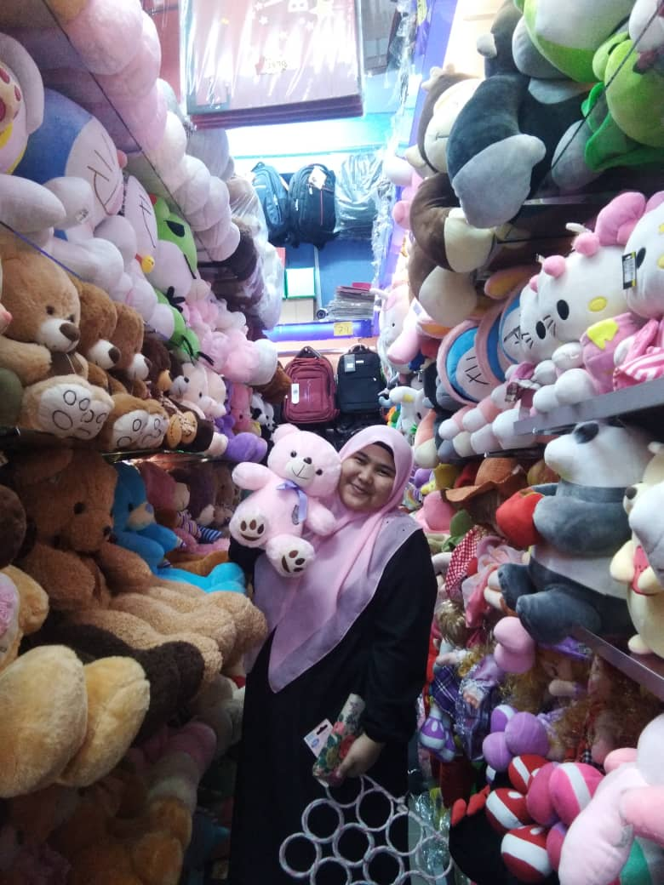
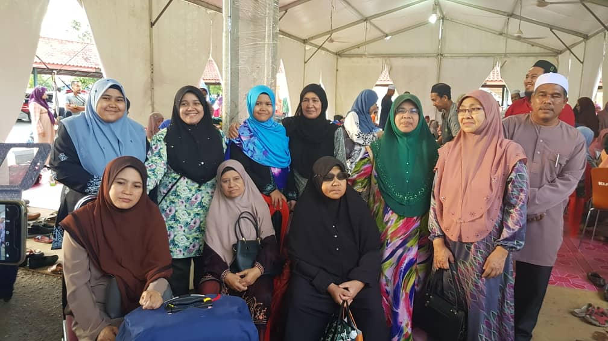
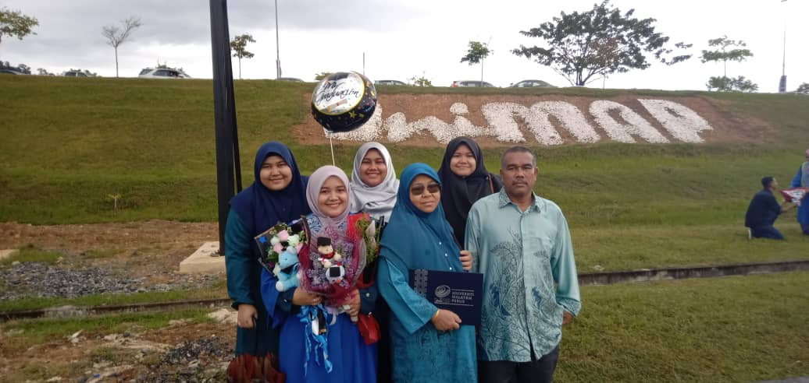
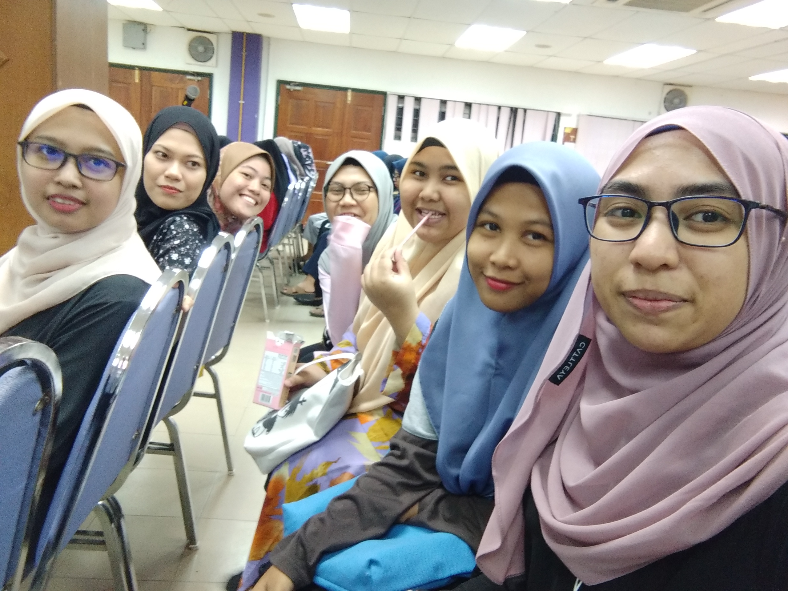

BIODATA ABOUT ME AND MY FAMILY
My name is Wan Nur Madihah binti Wan Yusof. I'm 21 years old. I live in Taman Guru Tanah Merah, Kelantan.From my home to Uitm Machang is taking about 30 minutes. My hobbies is cycling and playing badminton.
THIS IS MY FAMILY
 I have father, mother, 3 older sister and 2 younger sister. This is picture when I sent my farther and mother go to Haji.
THIS IS MY FRIENDS


This is my friend when I was at Dato Mahmud Paduka Raja (1)
THIS IS FRIENDS AT UITM MACHANG

This is my friend when I was at Uitm Machang. Because of Covid 19 I have got with them just 3 weeks at Uitm Machang. That was when Semester 1 and now I'm semester 2.